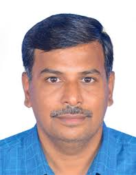
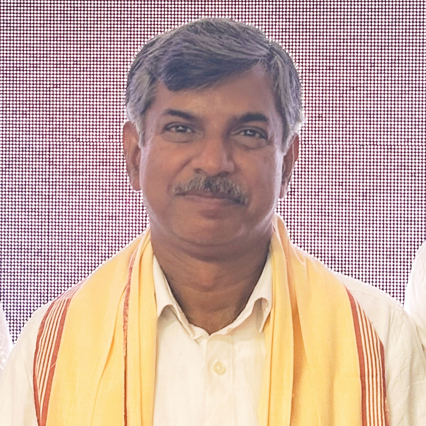
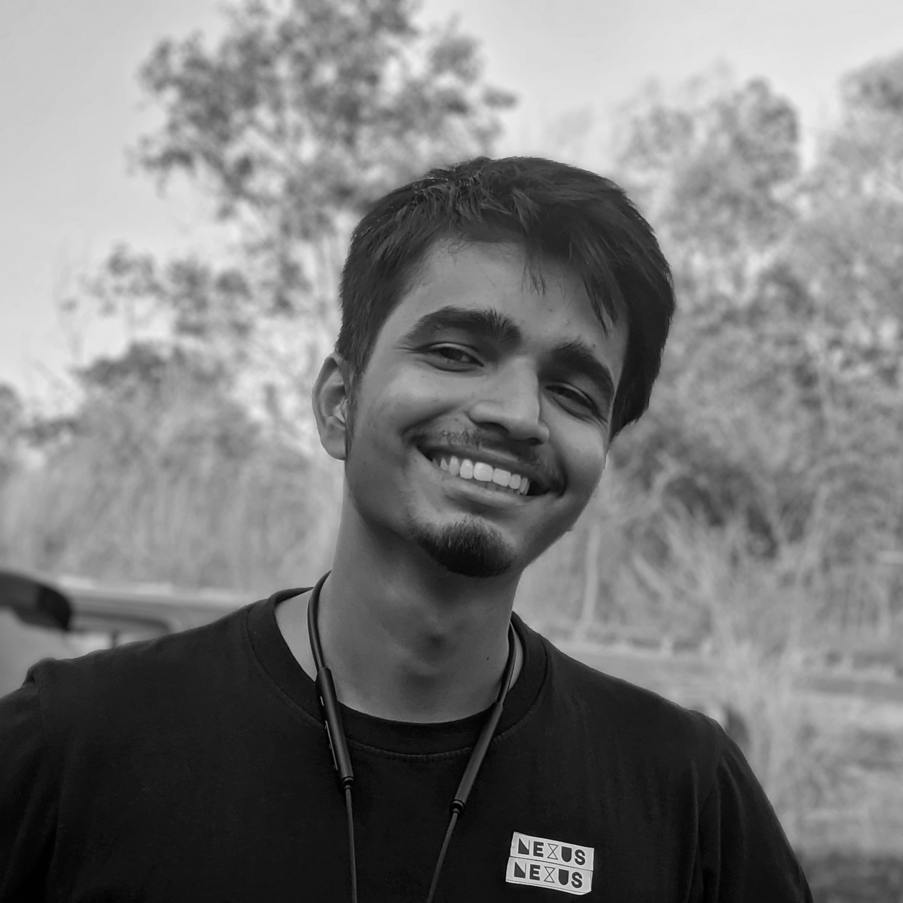

<!DOCTYPE html>
<html lang="en">
<head>
    <meta charset="UTF-8">
    <meta name="viewport" content="width=device-width, initial-scale=1.0">
    <title>About the Team | Rice Landraces Project</title>
    <link rel="stylesheet" href="style.css">
    <link rel="preconnect" href="https://fonts.googleapis.com">
    <link rel="preconnect" href="https://fonts.gstatic.com" crossorigin>
    <link href="https://fonts.googleapis.com/css2?family=Poppins:wght@400;600;700&display=swap" rel="stylesheet">
</head>
<body class="page-about">
    <div class="fixed-helix-background">
        <div class="dna-viewport">
            <div id="dna-helix-structure"></div>
        </div>
    </div>

    <div class="genomics-grid"></div>

    <div class="content-container">
        <div class="main-layout">
            <aside class="left-panel">
                 <nav class="animate-on-scroll">
                     <ul>
                        <li><a href="index.html">Home</a></li>
                        <li><a href="explore.html">Explore</a></li>
                        <li><a href="about.html" class="active">About</a></li> <li><a href="contact.html">Contact</a></li>
                    </ul>
                </nav>
                <div class="page-content animate-on-scroll">
                    <h1>About the Team</h1>
                    <p>Meet the researchers driving the "Genome Exploration of Rice Landraces through Machine Learning Methods and their Validation" project at the Central University of Kerala.</p>

                    <section id="team" class="animate-on-scroll content-section">
                        <h2>Our Researchers</h2>
                        <div class="team-grid">
                            <div class="team-card card animate-on-scroll">
                                 <h3>Prof. Alagu Manickavelu</h3>
                                <p class="team-title">Principal Investigator (PI)</p>
                                <p class="team-affiliation">Professor, Department of Genomic Science, Central University of Kerala</p>
                                <p class="team-details">
                                    [Brief bio or research interests of the PI. You can add a sentence or two about their expertise relevant to the project.]
                                </p>
                                </div>

                            <div class="team-card card animate-on-scroll">
                                 <h3>Prof. Rajesh R</h3>
                                <p class="team-title">Co-Principal Investigator (Co-PI)</p>
                                 <p class="team-affiliation">Professor, Department of Computer Science, Central University of Kerala</p>
                                <p class="team-details">
                                    [Brief bio or research interests of the Co-PI. Mention their role or expertise, e.g., computer science collaboration.]
                                </p>
                                </div>

                            <div class="team-card card animate-on-scroll">
                                 <h3>Saumya Dwivedi</h3>
                                <p class="team-title">Project Associate</p>
                                 <p class="team-affiliation">Central University of Kerala</p>
                                <p class="team-details">
                                    [Briefly describe your role in the project, your background (e.g., M.Sc./Ph.D. student), and interests related to the project work.]
                                </p>
                                </div>
                        </div>
                    </section>

                    <section id="project-summary-about" class="animate-on-scroll content-section">
                         <h2>Project Overview</h2>
                         <p>
                            Rice landraces hold untapped genetic potential. Our project uses advanced machine learning on genomic data from CUK and IRRI to identify valuable traits (yield, stress tolerance, nutrition) in these traditional varieties, aiming to accelerate modern rice breeding and provide insights applicable to other crops. Collaboration with computer science enhances our analytical power and fosters interdisciplinary training.
                         </p>
                     </section>

                </div>
            </aside>
            <div class="right-panel-spacer"></div>
        </div>
    </div>

    <script src="script.js"></script>
</body>
</html>